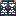

Trial Gateway

Trial Gateway
Unstable gateway
An unstable gateway to the Trial Chambers. Stack villagers on it and right-click to send them through. Fades after 3 days.
How to Get It
Made From


Other Ways
Find a Trial Chamber out in the world. The gateway fades after 3 days.
Inside
A few waves of enemies, and then the 
 Iron Ingot
Iron Ingot